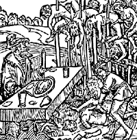

| impaled |
| home page |
|  |
| . It was obvious from the start that he believed in generating fear to produce discipline; Could you imagine being a foot solider of the Turkish army marching into Wallachia (now part of Romania). And once there seeing the burned and dismembered corpses of those men who fought before you, each one impaled on long poles, stretched across miles and miles of enemy real estate. However, Vlad Dracula did not reserve his cruelty to his enemies. 2) He had the Turbans of visiting ambassadors nailed to their heads, when they refused to remove them in his presence. |
|
Immediately he had Prince Lasla killed, who was lord of this country. Soon after this he had villages in Transylvania, also a town by the name of Beckendorf in Wurtzland, burned. Some he brought home with him to Wallachia and impaled them all there. He also had a large family extinguished and impaled, from the smallest to the largest, young and old. He had some of his people buried naked up to the navel and had them shot at. |